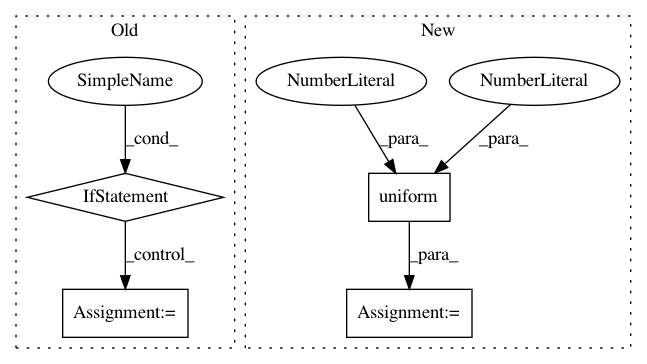

8b3f79f3079834f00c7ec62d5decd6bc026c1bc8,python/ray/tune/examples/tune_cifar10_gluon.py,,,#,186
Before Change
from ray.tune.schedulers import AsyncHyperBandScheduler, FIFOScheduler
ray.init()
if args.scheduler == "fifo":
sched = FIFOScheduler()
elif args.scheduler == "asynchyperband":
sched = AsyncHyperBandScheduler(
metric="mean_loss", mode="min", max_t=400, grace_period=60)
else:
raise NotImplementedError
tune.run(
train_cifar10,
name=args.expname,
verbose=2,
After Change
args = parser.parse_args()
sched = create_scheduler(args.scheduler)
analysis = tune.run(
train_cifar10,
name=args.expname,
verbose=2,
scheduler=sched,
stop={
"mean_accuracy": 0.98,
"training_iteration": 1 if args.smoke_test else args.epochs
},
resources_per_trial={
"cpu": int(args.num_workers),
"gpu": int(args.num_gpus)
},
num_samples=1 if args.smoke_test else args.num_samples,
config={
"args": args,
"lr": tune.loguniform(1e-4, 1e-1),
"momentum": tune.uniform(0.85, 0.95),
})
print("Best hyperparameters found were: ", analysis.best_config)
In pattern: SUPERPATTERN
Frequency: 3
Non-data size: 4
Instances
Project Name: ray-project/ray
Commit Name: 8b3f79f3079834f00c7ec62d5decd6bc026c1bc8
Time: 2020-11-14
Author: rliaw@berkeley.edu
File Name: python/ray/tune/examples/tune_cifar10_gluon.py
Class Name:
Method Name:
Project Name: 7ossam81/EvoloPy
Commit Name: 4678e49d41959e8c66e656c3b4fca59e2dd11d1f
Time: 2019-03-08
Author: raneem.qaddoura@gmail.com
File Name: GA.py
Class Name:
Method Name: GA
Project Name: KhronosGroup/NNEF-Tools
Commit Name: 2470071fd9da49c6b5a5165d1648e6d04e93777d
Time: 2021-01-14
Author: viktor.gyenes@aimotive.com
File Name: nnef_tools/generate.py
Class Name:
Method Name: main